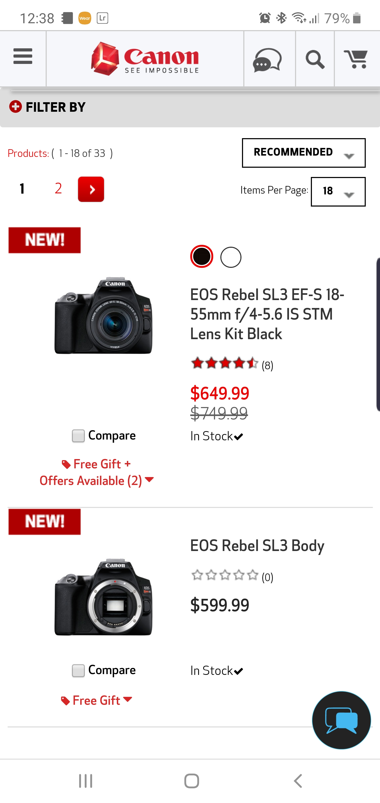

Hick's Law: Keeping Things Simple
It is probably common knowledge that Google’s homepage is one of the simplest webpages out there for the desktop version with placing their logo high and centered, with their search bar. Very few functions, very simple, and where the mobile page differs is, they add items below the search bar that you may be interested in. These items can range from anywhere between ads for a product, to new articles covering what they believe interests you. Here you can see from this screenshot that they still keep this homepage simple, and do not over burden you with too much to do. This is probably one of the biggest websites that practices Hick’s Law.
Visual Hierarchy: Grabbing Your Attention
Matti Haapoja
When visiting Matti’s website, the first thing that stands out is a stunning picture with some motivational words centered. This image stands out on the page because below it is mostly white, so your eyes are drawn to it. Then the scene is interesting, peaking the viewers interest even more. And from the use of a beautiful image displayed as a focal point there is interest to see what is below.
White Space: Not Distracting You
Canon USA
Looking at Canon’s website it is clear that white space and a clean design is what they were going for. As you go through their product everything is surrounded by an open field of white, which brings your eyes towards the pictures of the product and the description. If Canon did not utilize white space for this then it would be difficult to see their products stand off on the page, limiting your interest.